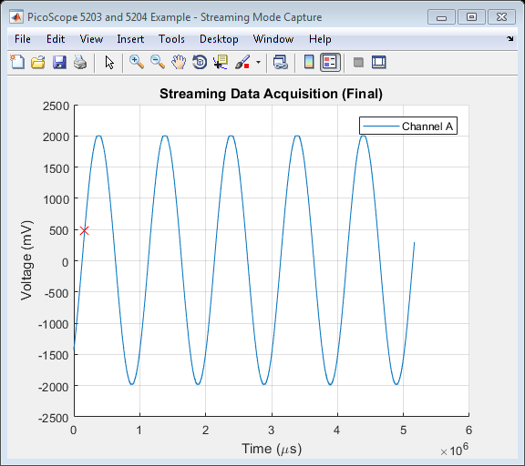

PicoScope 5203 and 5204 Oscilloscope Streaming Data Capture Example
This is a MATLAB script that demonstrates how to use the ps5000 API library functions to capture data in streaming mode from a PicoScope 5203 or 5204 oscilloscope using the following approach:
- Open a unit
- Display unit information
- Set up an input channel
- Verify the timebase index
- Setup a trigger
- Output a signal from the signal generator
- Set data buffers for collection
- Start data collection
- Retrieve the data values and convert to millivolts
- Plot data live if the User chooses to do so
- Plot data at the end of the capture
- Close the unit
To run this example:
Type PicoScope520XStreamingExample at the MATLAB command prompt or run from the MATLAB Editor.
Copyright © 2017 Pico Technology Ltd. See LICENSE file for terms.
Contents
- Clear command window and close all figures
- Load configuration information
- Parameters used throughout the script
- Load library files
- Open unit
- Diplay unit information
- Set channels
- Set up simple trigger
- Prompt to connect signal out to channel A
- Start signal generator
- Set data buffers
- Start streaming and collect data
- Stop the device
- Find the number of samples.
- Process data
- Close unit
- Unload library files
Clear command window and close all figures
clc;
close all;
Load configuration information
PS5000Config;
Parameters used throughout the script
channelA = ps5000Enuminfo.enPS5000Channel.PS5000_CHANNEL_A;
channelB = ps5000Enuminfo.enPS5000Channel.PS5000_CHANNEL_B;
maxADCValue = 32512; % Maximum ADC count value
oversample = 1;
Load library files
Load the ps5000 and ps5000Wrap shared library files using the respective prototype files.
archStr = computer('arch'); ps5000MFile = str2func(strcat('ps5000MFile_', archStr)); if ~libisloaded('ps5000') if ispc() loadlibrary('ps5000.dll', ps5000MFile); elseif ismac() error('PS5000StreamingExample:OSNotSupported', ... 'Mac OS X not supported, please contact Pico Technology Technical Support for further assistance.'); elseif isunix() loadlibrary('libps5000.so', ps5000MFile, 'alias', 'ps5000'); end if ~libisloaded('ps5000') error('PS5000StreamingExample:LibraryNotLoaded', 'Library ps5000 or ps5000MFile not found'); end end ps5000WrapMFile = str2func(strcat('ps5000WrapMFile_', archStr)); if ~libisloaded('ps5000Wrap') if ispc() loadlibrary('ps5000Wrap.dll', ps5000WrapMFile); elseif ismac() error('PS5000StreamingExample:OSNotSupported', ... 'Mac OS X not supported, please contact Pico Technology Technical Support for further assistance.'); elseif isunix() loadlibrary('libps5000Wrap.so', ps5000WrapMFile, 'alias', 'ps5000Wrap'); end if ~libisloaded('ps5000Wrap') error('PS5000StreamingExample:LibraryNotLoaded', 'Library ps5000Wrap or ps5000WrapMFile not found'); end end % (Optional view library functions) % libfunctionsview('ps5000Wrap');
Open unit
Open connection to oscilloscope and obtain unique handle value for device.
disp('PicoScope 5203 and 5204 Streaming Example'); unitHandle = 0; [status.open, unitHandle] = calllib('ps5000', 'ps5000OpenUnit', unitHandle); if (status.open > PicoStatus.PICO_OK) error('PS5000StreamingExample:DeviceNotOpened', 'Error opening device - status code %d \n', status.open); end
PicoScope 5203 and 5204 Streaming Example
Diplay unit information
Display driver, variant and batch/serial number information
infoLine = blanks(100); reqSize = length(infoLine); % Obtain driver version [status.infoDriver, driver] = calllib('ps5000', ... 'ps5000GetUnitInfo', unitHandle, infoLine, ... length(infoLine), reqSize, PicoStatus.PICO_DRIVER_VERSION); % Obtain variant information [status.infoVariant, variant] = calllib('ps5000', ... 'ps5000GetUnitInfo', unitHandle, infoLine, ... length(infoLine), reqSize, PicoStatus.PICO_VARIANT_INFO); % Obtain batch/serial information [status.infoVariant, serial] = calllib('ps5000', ... 'ps5000GetUnitInfo', unitHandle, infoLine, ... length(infoLine), reqSize, PicoStatus.PICO_BATCH_AND_SERIAL); fprintf('\nUnit information:\n\n'); fprintf('Driver : %s\n', driver); fprintf('Variant: %s\n', variant); fprintf('Serial : %s\n\n', serial); % Obtain number of channels channelCount = str2double(variant(2));
Unit information: Driver : 1.7.0.8 Variant: 5204 Serial : AY791/043
Set channels
Set channel A to use DC coupling with an input range of ±2 volts
channelSettings(1).enabled = PicoConstants.TRUE; channelSettings(1).dc = PicoConstants.TRUE; channelSettings(1).range = ps5000Enuminfo.enPS5000Range.PS5000_2V; channelARangeMv = PicoConstants.SCOPE_INPUT_RANGES(channelSettings(1).range + 1); % Used later in the script [status.setChannelA] = calllib('ps5000', 'ps5000SetChannel', unitHandle, channelA, channelSettings(1).enabled, ... channelSettings(1).dc, channelSettings(1).range); if (status.setChannelA ~= PicoStatus.PICO_OK) error('PS5000StreamingExample:ChannelNotSet','ps5000SetChannel (A) - status code %d \n', status.setChannelA); end % Turn off channel B channelSettings(2).enabled = PicoConstants.FALSE; channelSettings(2).dc = PicoConstants.TRUE; channelSettings(2).range = ps5000Enuminfo.enPS5000Range.PS5000_2V; channelBRangeMv = PicoConstants.SCOPE_INPUT_RANGES(channelSettings(2).range + 1); % Used later in the script [status.setChannelB] = calllib('ps5000', 'ps5000SetChannel', unitHandle, channelB, channelSettings(2).enabled, ... channelSettings(2).dc, channelSettings(2).range); if(status.setChannelB ~= PicoStatus.PICO_OK) error('PS5000StreamingExample:ChannelNotSet', 'ps5000SetChannel (B) - status code %d \n', status.setChannelB); end % Set the number of enabled channels with the wrapper library enabledChannels = zeros(PicoConstants.DUAL_SCOPE, 1, 'int16'); enabledChannels(1) = channelSettings(1).enabled; enabledChannels(2) = channelSettings(2).enabled; status.setEnabledChannels = calllib('ps5000Wrap', 'setEnabledChannels', unitHandle, enabledChannels);
Set up simple trigger
Set a simple trigger on channel A - trigger when the signal rises through 500 mV, with an auto timeout of 5 seconds.
triggerEnabled = PicoConstants.TRUE; threshold = mv2adc(500, channelARangeMv, maxADCValue); direction = ps5000Enuminfo.enThresholdDirection.RISING; delay = 0; autoTriggerMs = 5000; % 5 second auto trigger [status.setSimpleTrigger] = calllib('ps5000', 'ps5000SetSimpleTrigger', unitHandle, triggerEnabled, ... channelA, threshold, direction, delay, autoTriggerMs);
Prompt to connect signal out to channel A
h = helpdlg('Connect Signal Out to channel A and click OK.', 'Connect Input Signal'); uiwait(h);
Start signal generator
Output a sine wave at 1 Hz with a peak-to-peak voltage of 4 volts.
offsetVoltage = 0; % Offset in microvolts pkToPk = 4000000; % Peak-to-peak amplitude in microvolts waveType = ps5000Enuminfo.enWaveType.PS5000_SINE; % Type of Wave. startFrequency = 1; % Hz stopFrequency = 1; % Hz Stop frequency must equal start frequency for constant waveform increment = 0; % Increment in frequency for sweep mode. dwellTime = 0; % Time (sec) spent in each frequency for sweep mode. sweepType = ps5000Enuminfo.enSweepType.UP; % Type of sweep. whiteNoise = PicoConstants.FALSE; shots = 0; sweeps = 0; triggerType = ps5000Enuminfo.enSigGenTrigType.SIGGEN_RISING; triggerSource = ps5000Enuminfo.enSigGenTrigSource.SIGGEN_NONE; extInThreshold = 0; disp('Starting signal generator...'); status.setSigGenBuiltIn = calllib('ps5000', 'ps5000SetSigGenBuiltIn', unitHandle, ... offsetVoltage, pkToPk, waveType, startFrequency, stopFrequency, increment, dwellTime,... sweepType, whiteNoise, shots, sweeps, triggerType, triggerSource, extInThreshold);
Starting signal generator...
Set data buffers
Data buffers for channel A - buffers should be set with the driver, and these MUST be passed with application buffers to the wrapper library in order to ensure data is correctly copied.
sampleCount = 100000; % Size of the buffer to collect data from buffer. ratioMode = ps5000Enuminfo.enRatioMode.RATIO_MODE_NONE; % Buffers to be passed to the driver pDriverBufferChA = libpointer('int16Ptr', zeros(sampleCount, 1, 'int16')); status.setDataBufferChA = calllib('ps5000', 'ps5000SetDataBuffer', unitHandle, channelA, pDriverBufferChA, sampleCount); % Application Buffers - these are for copying from the driver into. pAppBufferChA = libpointer('int16Ptr', zeros(sampleCount, 1, 'int16')); status.setAppDriverBuffersA = calllib('ps5000Wrap', 'setAppAndDriverBuffers', unitHandle, channelA, ... pAppBufferChA, pDriverBufferChA, sampleCount);
Start streaming and collect data
Collect data for 5 seconds after a trigger event, including any pre-trigger data - maximum array size will depend on the PC's resources - type memory at the MATLAB command prompt for further information.
% Define the sampling interval - this will be modified by the driver if the % requested sampling interval is not supported sampleInterval = 1; sampleIntervalTimeUnits = ps5000Enuminfo.enPS5000TimeUnits.PS5000_US; % Set the number of pre- and post-trigger samples to collect. Note that in % streaming mode, the device will begin returning data regardless of % whether a trigger is set or not. numPreTriggerSamples = 0; numPostTriggerSamples = 5000000; % Set other streaming parameters autoStop = PicoConstants.TRUE; downSampleRatio = 1; overviewBufferSize = sampleCount; % Define buffers to store data collected from the channels. If capturing % data without using the autoStop flag, or if using a trigger with the % autoStop flag, allocate sufficient space (1.5 times the sum of the number of % pre-trigger and post-trigger samples is shown below) to allow for % additional pre-trigger data. Pre-allocating the array is more efficient % than using <matlab:doc('vertcat') |vertcat|> to combine data. maxSamples = numPreTriggerSamples + numPostTriggerSamples; % Take into account the downSampleRatio finalBufferLength = round(1.5 * maxSamples / downSampleRatio); % Prompt User to indicate if they wish to plot live streaming data. plotLiveData = questionDialog('Plot live streaming data?', 'Streaming Data Plot'); if (plotLiveData == PicoConstants.TRUE) disp('Live streaming data collection with second plot on completion.'); else disp('Streaming data plot on completion.'); end [status.runStreaming, actualSampleInterval] = calllib('ps5000', 'ps5000RunStreaming', unitHandle, ... sampleInterval, sampleIntervalTimeUnits, numPreTriggerSamples, numPostTriggerSamples, ... autoStop, downSampleRatio, overviewBufferSize); disp('Streaming data...'); fprintf('Click the STOP button to stop capture or wait for auto stop if enabled.\n\n') % Variables to be used when collecting the data: hasAutoStopOccurred = PicoConstants.FALSE; % Indicates if the device has stopped automatically. newSamples = 0; % Number of new samples returned from the driver. previousTotal = 0; % The previous total number of samples. totalSamples = 0; % Total samples captured by the device. startIndex = 0; % Start index of data in the buffer returned. hasTriggered = 0; % To indicate if trigger has occurred. triggeredAtIndex = 0; % The index in the overall buffer where the trigger occurred. % Libpointer objects for streaming data parameters pOverflow = libpointer('int16Ptr', 0); pTrigAt = libpointer('uint32Ptr', 0); pAutoStop = libpointer('int16Ptr', 0); pStartIndex = libpointer('uint32Ptr', 0); status.getStreamingLatestValues = PicoStatus.PICO_OK; % OK % Display a 'Stop' button. [stopFig.h, stopFig.h] = stopButton(); flag = 1; % Use flag variable to indicate if stop button has been clicked (0) setappdata(gcf, 'run', flag); % Plot Properties - these are for displaying data as it is collected. % Set x-axis for both live and post-capture plots according to the time % units specified.. switch (sampleIntervalTimeUnits) case ps5000Enuminfo.enPS5000TimeUnits.PS5000_FS xLabelStr = 'Time (fs)'; case ps5000Enuminfo.enPS5000TimeUnits.PS5000_PS xLabelStr = 'Time (ps)'; case ps5000Enuminfo.enPS5000TimeUnits.PS5000_NS xLabelStr = 'Time (ns)'; case ps5000Enuminfo.enPS5000TimeUnits.PS5000_US xLabelStr = 'Time (\mus)'; case ps5000Enuminfo.enPS5000TimeUnits.PS5000_MS xLabelStr = 'Time (ms)'; case ps5000Enuminfo.enPS5000TimeUnits.PS5000_S xLabelStr = 'Time (s)'; otherwise xLabelStr = 'Time'; end if (plotLiveData == PicoConstants.TRUE) % Plot on a single figure figure1 = figure('Name','PicoScope 5203 and 5204 Example - Streaming Mode Capture', ... 'NumberTitle','off'); axes1 = axes('Parent', figure1); % Estimate x-axis limit to try and avoid using too much CPU resources % when drawing - use max voltage range selected if plotting multiple % channels on the same graph. xlim(axes1, [0 (actualSampleInterval * finalBufferLength)]); yRange = channelARangeMv + 500; ylim(axes1,[(-1 * yRange) yRange]); hold(axes1,'on'); grid(axes1, 'on'); title(axes1, 'Live Streaming Data Capture'); xlabel(axes1, xLabelStr); ylabel(axes1, 'Voltage (mV)'); end % Collect samples as long as the |hasAutoStopOccurred| flag has not been % set or the call to |getStreamingLatestValues()| does not return an error % code (check for STOP button push inside loop). while (hasAutoStopOccurred == PicoConstants.FALSE && status.getStreamingLatestValues == PicoStatus.PICO_OK) ready = PicoConstants.FALSE; while (ready == PicoConstants.FALSE) status.getStreamingLatestValues = calllib('ps5000Wrap', 'GetStreamingLatestValues', unitHandle); ready = calllib('ps5000Wrap', 'IsReady', unitHandle); % Give option to abort from here. flag = getappdata(gcf, 'run'); drawnow; if (flag == 0) disp('STOP button clicked - aborting data collection.') break; end drawnow; end % Check for new data values. newSamples = calllib('ps5000Wrap', 'AvailableData', unitHandle, pStartIndex); if (newSamples > 0) % Check if the scope has triggered. triggered = calllib('ps5000Wrap', 'IsTriggerReady', unitHandle, pTrigAt); if (triggered == PicoConstants.TRUE) hasTriggered = PicoConstants.TRUE; triggeredAt = pTrigAt.Value; % Adjust trigger position as MATLAB does not use zero-based % indexing. bufferTriggerPosition = triggeredAt + 1; fprintf('Triggered - index in buffer: %d\n', bufferTriggerPosition); hasTriggered = triggered; % Set the total number of samples at which the device % triggered. triggeredAtIndex = totalSamples + bufferTriggerPosition; end % Position index of data in the buffer(s). startIndex = pStartIndex.Value; previousTotal = totalSamples; totalSamples = totalSamples + newSamples; % Printing to console can slow down acquisition - use for % demonstration. fprintf('Collected %d samples, start index: %d, total: %d.\n', newSamples, startIndex, totalSamples); firstValuePosn = startIndex + 1; lastValuePosn = startIndex + newSamples; % Convert data values to millivolts from the application buffer(s). bufferChAmV = adc2mv(pAppBufferChA.Value(firstValuePosn:lastValuePosn), channelARangeMv, maxADCValue); % Process collected data further if required - this example plots % the data if the User has selected 'Yes' at the prompt. % Copy data into the final buffer(s). pBufferChAFinal.Value((previousTotal + 1):totalSamples) = bufferChAmV; if (plotLiveData == PicoConstants.TRUE) % Time axis % Multiply by ratio mode as samples get reduced. time = (double(actualSampleInterval) * double(downSampleRatio)) * (previousTotal:(totalSamples - 1)); plot(time, bufferChAmV); end % Clear variables for use again. clear bufferChAmV; clear firstValuePosn; clear lastValuePosn; clear startIndex; clear triggered; clear triggerAt; end % Check if auto stop has occurred. hasAutoStopOccurred = calllib('ps5000Wrap', 'AutoStopped', unitHandle); if (hasAutoStopOccurred == PicoConstants.TRUE) disp('AutoStop: TRUE - exiting loop.'); break; end % Check if 'STOP' button pressed flag = getappdata(gcf, 'run'); drawnow; if (flag == 0) disp('STOP button clicked - aborting data collection.') break; end end % Close the STOP button window. if (exist('stopFig', 'var')) close('Stop Button'); clear stopFig; end if (plotLiveData == PicoConstants.TRUE) drawnow; % Take hold off the current figure. hold(axes1, 'off'); movegui(figure1, 'west'); end if (hasTriggered == PicoConstants.TRUE) fprintf('Triggered at overall index: %d\n', triggeredAtIndex); end fprintf('\n');
Streaming data plot on completion. Streaming data... Click the STOP button to stop capture or wait for auto stop if enabled. Collected 32689 samples, start index: 0, total: 32689. Collected 32768 samples, start index: 32689, total: 65457. Collected 32768 samples, start index: 65457, total: 98225. Collected 1775 samples, start index: 98225, total: 100000. Collected 30993 samples, start index: 0, total: 130993. Collected 32768 samples, start index: 30993, total: 163761. Triggered - index in buffer: 1878 Collected 32760 samples, start index: 63761, total: 196521. Collected 3479 samples, start index: 96521, total: 200000. Collected 29289 samples, start index: 0, total: 229289. Collected 32768 samples, start index: 29289, total: 262057. Collected 32768 samples, start index: 62057, total: 294825. Collected 5175 samples, start index: 94825, total: 300000. Collected 27593 samples, start index: 0, total: 327593. Collected 32768 samples, start index: 27593, total: 360361. Collected 32768 samples, start index: 60361, total: 393129. Collected 6871 samples, start index: 93129, total: 400000. Collected 25897 samples, start index: 0, total: 425897. Collected 32768 samples, start index: 25897, total: 458665. Collected 32768 samples, start index: 58665, total: 491433. Collected 8567 samples, start index: 91433, total: 500000. Collected 24201 samples, start index: 0, total: 524201. Collected 32768 samples, start index: 24201, total: 556969. Collected 32768 samples, start index: 56969, total: 589737. Collected 10263 samples, start index: 89737, total: 600000. Collected 22505 samples, start index: 0, total: 622505. Collected 32768 samples, start index: 22505, total: 655273. Collected 32768 samples, start index: 55273, total: 688041. Collected 11959 samples, start index: 88041, total: 700000. Collected 20809 samples, start index: 0, total: 720809. Collected 32768 samples, start index: 20809, total: 753577. Collected 32768 samples, start index: 53577, total: 786345. Collected 13655 samples, start index: 86345, total: 800000. Collected 19113 samples, start index: 0, total: 819113. Collected 32768 samples, start index: 19113, total: 851881. Collected 32768 samples, start index: 51881, total: 884649. Collected 15351 samples, start index: 84649, total: 900000. Collected 17417 samples, start index: 0, total: 917417. Collected 32768 samples, start index: 17417, total: 950185. Collected 32768 samples, start index: 50185, total: 982953. Collected 17047 samples, start index: 82953, total: 1000000. Collected 15721 samples, start index: 0, total: 1015721. Collected 32768 samples, start index: 15721, total: 1048489. Collected 32768 samples, start index: 48489, total: 1081257. Collected 18743 samples, start index: 81257, total: 1100000. Collected 14025 samples, start index: 0, total: 1114025. Collected 32768 samples, start index: 14025, total: 1146793. Collected 32768 samples, start index: 46793, total: 1179561. Collected 20439 samples, start index: 79561, total: 1200000. Collected 12329 samples, start index: 0, total: 1212329. Collected 32768 samples, start index: 12329, total: 1245097. Collected 32768 samples, start index: 45097, total: 1277865. Collected 22135 samples, start index: 77865, total: 1300000. Collected 10633 samples, start index: 0, total: 1310633. Collected 32768 samples, start index: 10633, total: 1343401. Collected 32768 samples, start index: 43401, total: 1376169. Collected 23831 samples, start index: 76169, total: 1400000. Collected 8937 samples, start index: 0, total: 1408937. Collected 32768 samples, start index: 8937, total: 1441705. Collected 32768 samples, start index: 41705, total: 1474473. Collected 25527 samples, start index: 74473, total: 1500000. Collected 7241 samples, start index: 0, total: 1507241. Collected 32768 samples, start index: 7241, total: 1540009. Collected 32768 samples, start index: 40009, total: 1572777. Collected 27223 samples, start index: 72777, total: 1600000. Collected 5545 samples, start index: 0, total: 1605545. Collected 32768 samples, start index: 5545, total: 1638313. Collected 32768 samples, start index: 38313, total: 1671081. Collected 28919 samples, start index: 71081, total: 1700000. Collected 3849 samples, start index: 0, total: 1703849. Collected 32768 samples, start index: 3849, total: 1736617. Collected 32768 samples, start index: 36617, total: 1769385. Collected 30615 samples, start index: 69385, total: 1800000. Collected 2153 samples, start index: 0, total: 1802153. Collected 32768 samples, start index: 2153, total: 1834921. Collected 32768 samples, start index: 34921, total: 1867689. Collected 32311 samples, start index: 67689, total: 1900000. Collected 457 samples, start index: 0, total: 1900457. Collected 32768 samples, start index: 457, total: 1933225. Collected 32768 samples, start index: 33225, total: 1965993. Collected 32768 samples, start index: 65993, total: 1998761. Collected 1239 samples, start index: 98761, total: 2000000. Collected 31529 samples, start index: 0, total: 2031529. Collected 32768 samples, start index: 31529, total: 2064297. Collected 32768 samples, start index: 64297, total: 2097065. Collected 2935 samples, start index: 97065, total: 2100000. Collected 29833 samples, start index: 0, total: 2129833. Collected 32768 samples, start index: 29833, total: 2162601. Collected 32768 samples, start index: 62601, total: 2195369. Collected 4631 samples, start index: 95369, total: 2200000. Collected 28137 samples, start index: 0, total: 2228137. Collected 32768 samples, start index: 28137, total: 2260905. Collected 32768 samples, start index: 60905, total: 2293673. Collected 6327 samples, start index: 93673, total: 2300000. Collected 26441 samples, start index: 0, total: 2326441. Collected 32768 samples, start index: 26441, total: 2359209. Collected 32768 samples, start index: 59209, total: 2391977. Collected 8023 samples, start index: 91977, total: 2400000. Collected 24745 samples, start index: 0, total: 2424745. Collected 32768 samples, start index: 24745, total: 2457513. Collected 32768 samples, start index: 57513, total: 2490281. Collected 9719 samples, start index: 90281, total: 2500000. Collected 23049 samples, start index: 0, total: 2523049. Collected 32768 samples, start index: 23049, total: 2555817. Collected 32768 samples, start index: 55817, total: 2588585. Collected 11415 samples, start index: 88585, total: 2600000. Collected 21353 samples, start index: 0, total: 2621353. Collected 32768 samples, start index: 21353, total: 2654121. Collected 32768 samples, start index: 54121, total: 2686889. Collected 13111 samples, start index: 86889, total: 2700000. Collected 19657 samples, start index: 0, total: 2719657. Collected 32768 samples, start index: 19657, total: 2752425. Collected 32768 samples, start index: 52425, total: 2785193. Collected 14807 samples, start index: 85193, total: 2800000. Collected 17961 samples, start index: 0, total: 2817961. Collected 32768 samples, start index: 17961, total: 2850729. Collected 32768 samples, start index: 50729, total: 2883497. Collected 16503 samples, start index: 83497, total: 2900000. Collected 16265 samples, start index: 0, total: 2916265. Collected 32768 samples, start index: 16265, total: 2949033. Collected 32768 samples, start index: 49033, total: 2981801. Collected 18199 samples, start index: 81801, total: 3000000. Collected 14569 samples, start index: 0, total: 3014569. Collected 32768 samples, start index: 14569, total: 3047337. Collected 32768 samples, start index: 47337, total: 3080105. Collected 19895 samples, start index: 80105, total: 3100000. Collected 12873 samples, start index: 0, total: 3112873. Collected 32768 samples, start index: 12873, total: 3145641. Collected 32768 samples, start index: 45641, total: 3178409. Collected 21591 samples, start index: 78409, total: 3200000. Collected 11177 samples, start index: 0, total: 3211177. Collected 32768 samples, start index: 11177, total: 3243945. Collected 32768 samples, start index: 43945, total: 3276713. Collected 23287 samples, start index: 76713, total: 3300000. Collected 9481 samples, start index: 0, total: 3309481. Collected 32768 samples, start index: 9481, total: 3342249. Collected 32768 samples, start index: 42249, total: 3375017. Collected 24983 samples, start index: 75017, total: 3400000. Collected 7785 samples, start index: 0, total: 3407785. Collected 32768 samples, start index: 7785, total: 3440553. Collected 32768 samples, start index: 40553, total: 3473321. Collected 26679 samples, start index: 73321, total: 3500000. Collected 6089 samples, start index: 0, total: 3506089. Collected 32768 samples, start index: 6089, total: 3538857. Collected 32768 samples, start index: 38857, total: 3571625. Collected 28375 samples, start index: 71625, total: 3600000. Collected 4393 samples, start index: 0, total: 3604393. Collected 32768 samples, start index: 4393, total: 3637161. Collected 32768 samples, start index: 37161, total: 3669929. Collected 30071 samples, start index: 69929, total: 3700000. Collected 2697 samples, start index: 0, total: 3702697. Collected 32768 samples, start index: 2697, total: 3735465. Collected 32768 samples, start index: 35465, total: 3768233. Collected 31767 samples, start index: 68233, total: 3800000. Collected 1001 samples, start index: 0, total: 3801001. Collected 32768 samples, start index: 1001, total: 3833769. Collected 32768 samples, start index: 33769, total: 3866537. Collected 32768 samples, start index: 66537, total: 3899305. Collected 695 samples, start index: 99305, total: 3900000. Collected 32073 samples, start index: 0, total: 3932073. Collected 32768 samples, start index: 32073, total: 3964841. Collected 32768 samples, start index: 64841, total: 3997609. Collected 2391 samples, start index: 97609, total: 4000000. Collected 30377 samples, start index: 0, total: 4030377. Collected 32768 samples, start index: 30377, total: 4063145. Collected 32768 samples, start index: 63145, total: 4095913. Collected 4087 samples, start index: 95913, total: 4100000. Collected 28681 samples, start index: 0, total: 4128681. Collected 32768 samples, start index: 28681, total: 4161449. Collected 32768 samples, start index: 61449, total: 4194217. Collected 5783 samples, start index: 94217, total: 4200000. Collected 26985 samples, start index: 0, total: 4226985. Collected 32768 samples, start index: 26985, total: 4259753. Collected 32768 samples, start index: 59753, total: 4292521. Collected 7479 samples, start index: 92521, total: 4300000. Collected 25289 samples, start index: 0, total: 4325289. Collected 32768 samples, start index: 25289, total: 4358057. Collected 32768 samples, start index: 58057, total: 4390825. Collected 9175 samples, start index: 90825, total: 4400000. Collected 23593 samples, start index: 0, total: 4423593. Collected 32768 samples, start index: 23593, total: 4456361. Collected 32768 samples, start index: 56361, total: 4489129. Collected 10871 samples, start index: 89129, total: 4500000. Collected 21897 samples, start index: 0, total: 4521897. Collected 32768 samples, start index: 21897, total: 4554665. Collected 32768 samples, start index: 54665, total: 4587433. Collected 12567 samples, start index: 87433, total: 4600000. Collected 20201 samples, start index: 0, total: 4620201. Collected 32768 samples, start index: 20201, total: 4652969. Collected 32768 samples, start index: 52969, total: 4685737. Collected 14263 samples, start index: 85737, total: 4700000. Collected 18505 samples, start index: 0, total: 4718505. Collected 32768 samples, start index: 18505, total: 4751273. Collected 32768 samples, start index: 51273, total: 4784041. Collected 15959 samples, start index: 84041, total: 4800000. Collected 16809 samples, start index: 0, total: 4816809. Collected 32768 samples, start index: 16809, total: 4849577. Collected 32768 samples, start index: 49577, total: 4882345. Collected 17655 samples, start index: 82345, total: 4900000. Collected 15113 samples, start index: 0, total: 4915113. Collected 32768 samples, start index: 15113, total: 4947881. Collected 32768 samples, start index: 47881, total: 4980649. Collected 19351 samples, start index: 80649, total: 5000000. Collected 13417 samples, start index: 0, total: 5013417. Collected 32768 samples, start index: 13417, total: 5046185. Collected 32768 samples, start index: 46185, total: 5078953. Collected 21047 samples, start index: 78953, total: 5100000. Collected 11721 samples, start index: 0, total: 5111721. Collected 32768 samples, start index: 11721, total: 5144489. Collected 21151 samples, start index: 44489, total: 5165640. AutoStop: TRUE - exiting loop. Triggered at overall index: 165639
Stop the device
[status.stop] = calllib('ps5000', 'ps5000Stop', unitHandle);
Find the number of samples.
This is the number of samples held in the driver itself. The actual number of samples collected when using a trigger is likely to be greater. In this example, the total number of samples collected will be used.
pNumStreamingValues = libpointer('uint32Ptr', 0); status.numStreamingValues = calllib('ps5000', 'ps5000NoOfStreamingValues', unitHandle, pNumStreamingValues); numStreamingValues = pNumStreamingValues.Value; fprintf('Number of samples available from the driver: %u.\n\n', numStreamingValues);
Number of samples available from the driver: 5000000.
Process data
Process data post-capture if required - here the data will be plotted.
% Reduce size of arrays if required. if (totalSamples < maxSamples) pBufferChAFinal.Value(totalSamples + 1:end) = []; end % Retrieve data for the channels. channelAFinal = pBufferChAFinal.Value; % Plot total data collected on another figure. finalFigure = figure('Name','PicoScope 5203 and 5204 Example - Streaming Mode Capture', ... 'NumberTitle','off'); finalFigureAxes = axes('Parent', finalFigure); movegui(finalFigure, 'east'); hold on; title(finalFigureAxes, 'Streaming Data Acquisition (Final)'); xlabel(finalFigureAxes, xLabelStr); ylabel(finalFigureAxes, 'Voltage (mV)'); maxYRange = channelARangeMv + 500; ylim(finalFigureAxes,[(-1 * maxYRange) maxYRange]); % Calculate values for time axis, then plot. timeAxis = (double(actualSampleInterval) * double(downSampleRatio)) * (0:totalSamples - 1); plot(finalFigureAxes, timeAxis(1:totalSamples), channelAFinal(1:totalSamples)); if (hasTriggered) plot(finalFigureAxes, timeAxis(triggeredAtIndex), channelAFinal(triggeredAtIndex), 'rx', 'MarkerSize', 10); end grid(finalFigureAxes, 'on'); legend(finalFigureAxes, 'Channel A'); hold(finalFigureAxes, 'off');
Close unit
[status.closeUnit] = calllib('ps5000','ps5000CloseUnit', unitHandle); if (status.closeUnit == PicoStatus.PICO_OK) disp('Unit closed successfully.') else error('PS5000StreamingExample:CloseUnitError', 'ps5000CloseUnit - status code %d \n', status.closeUnit); end
Unit closed successfully.
Unload library files
unloadlibrary('ps5000'); if (~libisloaded('ps5000')) disp('ps5000 library unloaded successfully.'); else error('PS5000StreamingExample:LibraryUnloadError', 'ps5000 library not unloaded.'); end unloadlibrary('ps5000Wrap'); if (~libisloaded('ps5000Wrap')) disp('ps5000Wrap library unloaded successfully.'); else error('PS5000StreamingExample:LibraryUnloadError', 'ps5000Wrap library not unloaded.'); end
ps5000 library unloaded successfully. ps5000Wrap library unloaded successfully.